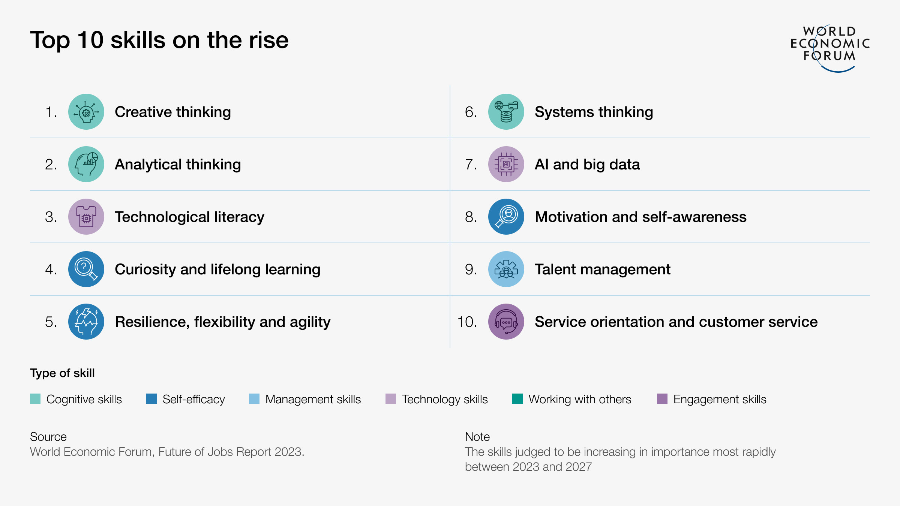

Programmierung ist die Kunst und Wissenschaft, Computer dazu zu bringen, bestimmte Aufgaben auszuführen. Dies geschieht, indem man ihnen genaue Anweisungen in Form von Code gibt. Dabei werden Logik, Problemlösungsfähigkeiten und technisches Know-how kombiniert, um Software-Anwendungen, Websites, Spiele und vieles mehr zu entwickeln. Programmieren ist nicht nur eine technische Fertigkeit, sondern auch ein kreativer Prozess, der neue Lösungen für reale Herausforderungen ermöglicht.
In der Praxis bedeutet Programmieren weit mehr als nur das Schreiben von Code. Es umfasst das Verstehen von Problemen, das Entwerfen effizienter Lösungen sowie das Testen und Optimieren von Programmen. Gerade in den angewandten Wissenschaften spielt Programmieren eine zentrale Rolle, um praxisnahe Lösungen zu entwickeln – sei es die Automatisierung eines Fertigungsprozesses, die Analyse komplexer Daten oder die Optimierung einer Maschine.
Exemplarische Anwendungsbereiche der Programmierung
Automatisierung: Vereinfachen von Routineaufgaben.
Robotik: Steuern von Robotern und automatisierten Maschinen.
Datenanalyse: Analysieren großer Datenmengen.
Künstliche Intelligenz: Entwickeln von KI-Systemen, z.B. zur Klassifizierung oder Generierung von Bildern.
Cybersecurity: Schützen von Computersystemen und Netzwerken vor Angriffen.
Medizinische Informatik: Entwickeln von Softwarelösungen für das Gesundheitswesen.
E-Commerce: Erstellen von Online-Shops und Zahlungsplattformen.
Webentwicklung: Erstellen und Gestalten von Websites und Webanwendungen.
Spieleentwicklung: Entwickeln von Computerspielen.
Mobile Apps: Programmieren von Anwendungen für Smartphones und Tablets.
Programmieren zu lernen ist vergleichbar mit dem Erlernen einer neuen Sprache: Je mehr Sie üben, desto besser können Sie Ihre Ideen in funktionsfähige Programme umsetzen. Lassen Sie sich dabei nicht von der Vielzahl an Programmiersprachen abschrecken. Ähnlich wie beim Sprachenlernen erleichtert das Wissen über eine Sprache das Erlernen einer weiteren: Wer Spanisch beherrscht, wird sich leichter in Italienisch zurechtfinden. Und selbst bei einer völlig anderen Sprache wie Japanisch profitieren Sie von Ihrer allgemeinen Sprachlernerfahrung. Deshalb beginnt man mit einer ausgewählten Programmiersprache und baut auf diesem Wissen auf, wenn man weitere benötigt.
2.2 Welche Bedeutung hat Programmierung für Ingenieurinnen und Ingenieure?
Programmieren ist längst kein reines IT-Thema mehr – es ist ein unverzichtbares Werkzeug für moderne Ingenieurinnen und Ingenieure. Ob Maschinenbau, Elektrotechnik, Mechatronik oder Bauingenieurwesen – in nahezu jedem ingenieurwissenschaftlichen Bereich spielen Software und Algorithmen eine zentrale Rolle. Eine Auswahl an Argumenten, warum Grundfertigkeiten der Programmierung für Ingenieurinnen und Ingenieure unverzichtbar sind:
Automatisierung und Effizienzsteigerung: Ingenieurinnen und Ingenieure nutzen Programmierung, um wiederkehrende Aufgaben zu automatisieren und somit die Effizienz zu steigern. Dies kann die Steuerung von Maschinen und Prozessen umfassen, aber auch die Erstellung von Berichten und Analysen. Durch Automatisierung können Fehler reduziert und Zeit gespart werden, was zu einer höheren Produktivität führt.
Simulation als Schlüsselwerkzeug: Simulationen ermöglichen Ingenieurinnen und Ingenieuren, komplexe Prozesse oder Systeme virtuell nachzubilden, zu analysieren und zu optimieren. Programmierkenntnisse sind hier unverzichtbar, um leistungsfähige Simulationen zu entwickeln und anzupassen.
Datenanalyse und Entscheidungsfindung: In der modernen Ingenieurpraxis fallen große Mengen an Daten an. Programmierkenntnisse ermöglichen es Ingenieurinnen und Ingenieuren, diese Daten zu sammeln, zu analysieren und daraus fundierte Entscheidungen zu treffen. Dies ist besonders wichtig in Bereichen wie der Qualitätskontrolle, der Forschung und Entwicklung sowie der Prozessoptimierung.
Entwicklung von maßgeschneiderten Lösungen: Ingenieurinnen und Ingenieure stehen oft vor komplexen Problemen, die standardisierte Softwarelösungen nicht immer abdecken können. Durch Programmieren können sie individuelle Softwarelösungen entwickeln, die genau auf ihre spezifischen Anforderungen zugeschnitten sind. Mit Programmierkenntnissen können sie dabei auch auf OpenSource-Frameworks, globale Entwicklungscommunities und eine nahezu unbegrenzte Palette an modernen Tools zugreifen.
Interdisziplinäre Zusammenarbeit: Die Fähigkeit zu programmieren erleichtert die Zusammenarbeit mit anderen Fachbereichen, wie der Informatik oder der Datenwissenschaft. Ingenieurinnen und Ingenieure können durch Programmierkenntnisse besser kommunizieren und gemeinsame Projekte effizienter umsetzen. Dies fördert den interdisziplinären Austausch und die Innovationskraft.
Karrierechancen und berufliche Weiterentwicklung: Programmierkenntnisse sind in der heutigen Arbeitswelt sehr gefragt und eröffnen Ingenieurinnen und Ingenieuren vielfältige Karrierechancen. Sie können sich in Bereichen wie der Robotik, der künstlichen Intelligenz, der Automatisierungstechnik oder der Medizintechnik spezialisieren. Darüber hinaus verbessern Programmierkenntnisse die berufliche Flexibilität und die Fähigkeit, sich an neue technologische Entwicklungen anzupassen.
Entscheidende Metakompetenzen: Programmieren fördert wichtige Metakompetenzen, die Ingenieurinnen und Ingenieuren helfen, in ihrer Arbeit erfolgreich zu sein. Dazu gehören:
Kritisches Denken: Die Fähigkeit, Probleme systematisch zu analysieren und fundierte Entscheidungen zu treffen.
Problemlösungsfähigkeiten: Entwickeln kreativer und effektiver Lösungen für komplexe technische Herausforderungen.
Teamarbeit: Zusammenarbeiten in interdisziplinären Teams und effektive Kommunikation mit Kolleginnen und Kollegen.
Anpassungsfähigkeit: Schnell auf neue Technologien und Methoden reagieren und diese in die Arbeit integrieren.
Selbstständiges Lernen: Kontinuierliches Lernen und Weiterentwickeln der eigenen Fähigkeiten, um immer auf dem neuesten Stand der Technik zu bleiben.
Im Zusammenhang mit dem letzten Punkt ist eine Untersuchung des World Economic Forums (Link) interessant, welche versucht, die Schlüsselqualifikationen für den zukünftigen Arbeitsmarkt zu identifizieren:

Abbildung 2.1: Wichtigste Zukunftsskills laut World Economic Forum.
Übungen:
Betrachten Sie Abbildung 2.1, welche basierend auf einer Studie des World Economic Forums die wichtigsten Zukunftsskills auflistet. Welche dieser Skills könnten von einem Programmierkurs und weiteren Erfahrungen auf diesem Gebiet profitieren?
KI ist in den letzten Jahren immer mächtiger geworden und kann selbständig Code schreiben. Diskutieren Sie vor diesem Hintergrund die Frage: Muss man heutzutage überhaupt noch programmieren lernen?
2.3 Grundbegriffe: Algorithmus und Programm
„In der Informatik geht es genauso wenig um Computer, wie in der Astronomie um Teleskope.“ ―Edsger W. Dijkstra (niederländischer Informatiker und Wegbereiter der Programmierung)
Das Eingangszitat macht deutlich, dass Computer für die Informatik vor allem nützliche Werkzeuge sind. Werkzeuge wozu? Allgemein gesprochen: zur Lösung von Problemen. Hierzu werden Algorithmen entwickelt und in Programmen umgesetzt. Diese beiden Grundbegriffe möchten wir in diesem Abschnitt genauer definieren:
Algorithmus: Eine präzise, endliche Abfolge von Anweisungen zur Lösung eines Problems oder zur Durchführung einer Aufgabe.
Algorithmen bilden die Grundlage der Programmierung, indem sie die Logik und die Schritte definieren, die ein Computer ausführen muss, um ein gewünschtes Ergebnis zu erzielen. Sie sind aber unabhängig von einer Programmiersprache, müssen auch gar nicht auf einem Computer ausgeführt werden, sondern können theoretisch auch von Hand durchgeführt werden. Wir alle kennen Algorithmen für bestimmte Probleme aus der Schule, z.B. den Euklidischen Algorithmus, der den größten gemeinsamen Teiler (ggT) von zwei Zahlen berechnet. Eine wichtige Eigenschaft aller Algorithmen ist die Finitheit: Ein Algorithmus muss mit endlich vielen Schritten zu einem Ergebnis kommen (es können durchaus sehr viele Schritte sein, aber eben nicht unendlich viele). Oft wird behauptet, dass Algorithmen deterministisch seien, also bei gleicher Eingabe auch gleiche Ausgaben erzeugten. Das stimmt allerdings nicht immer, denn es gibt auch nicht-deterministische Algorithmen, die mit Zufallszahlen arbeiten und bei wiederholter Durchführung andere Ergebnisse liefern (ein Beispiel lernen wir in Ingenieurinformatik II kennen).
Beispiel: Bubble-Sort einer Liste von Zahlen.
Problem: Gegeben ist eine Liste von Zahlen, z.B. 42, 6, -7, 100, 3. Die Zahlen sollen der Größe nach aufsteigend sortiert werden.
Ein Algorithmus für dieses Problem ist der sog. “Bubble-Sort”:
Schritt 1: Gehe zum ersten Element der Liste.
Schritt 2: Vergleiche das aktuelle Element mit dem nächsten Element.
Schritt 3: Wenn das aktuelle Element größer ist als das nächste Element, dann tausche die beiden.
Schritt 4: Gehe zum nächsten Element und wiederhole die Schritte 2 und 3, bis du das Ende der Liste erreichst.
Schritt 5: Gehe zurück zum Anfang der Liste und wiederhole die Schritte 1 bis 4, bis keine Vertauschungen mehr vorgenommen werden.
Probieren Sie den Algorithmus einmal von Hand aus. An diesem Beispiel erkennen Sie bereits die wichtigsten Elemente vieler Algorithmen: Bedingungen (“Wenn…, dann…”) und Wiederholungen (“wiederhole die Schritte…, bis…”). Mit diesen Strukturen werden wir uns noch viel beschäftigen.
Programm: Eine Sammlung von Anweisungen, die ein Computer ausführt, um eine bestimmte Aufgabe zu erledigen.
Programme bestehen aus einem oder mehreren Algorithmen, die in der Regel mit zusätzlichen Anweisungen kombiniert werden, z.B. für die Ausgabe der Ergebnisse. Sie sind in einer Programmiersprache geschrieben (man sagt auch “implementiert” und spricht auch von einer “Implementierung” oder “Implementation” anstelle von einem Programm). Programme können von einfachen Skripten bis hin zu komplexen Softwareanwendungen reichen. Ein und derselbe Algorithmus kann je nach Wahl der Programmiersprache unterschiedlich aussehen und unterschiedlich schwer zu implementieren sein, da nicht jede Programmiersprache dieselben Funktionalitäten bietet. Manche Programmiersprachen bieten spezifische Funktionen und Bibliotheken, die die Implementierung erleichtern, während andere Sprachen möglicherweise mehr manuelle Arbeit erfordern.
Wie würde nun eine Implementierung von Bubble-Sort in Python aussehen? Hinweis: Sie müssen den folgenden Code selbstverständlich noch nicht verstehen, aber vielleicht können Sie bestimmte Parallelen zum Algorithmus bereits erkennen. Hinter dem Symbol # stehen übrigens Kommentare, die für Menschen zur Erläuterung gedacht sind und keine Auswirkung auf den Code haben.
Code
# Python-Code, der den Algorithmus # Bubble Sort implementiert:def bubble_sort(numbers): # Vorbereitungen: result = numbers[:] # Input kopieren n =len(numbers) # Länge der Liste swapped =True# merkt sich, ob getauscht wurde# Es folgt eine Schleife, die# den Algorithmus wiederholt, bis nicht# mehr getauscht wurdewhile swapped: swapped =False# alle Elemente durchlaufen:for j inrange(1, n): if result[j-1] > result[j]:# Vorgänger ist größer als Nachfolger: tauschen! result[j-1], result[j] = result[j], result[j-1] swapped =True# es wurde getauscht# die sortierte Liste wird zurückgegeben:return result
Natürlich wollen wir unsere Implementierung testen:
bubble_sort([42,6,-7,100,3])
[-7, 3, 6, 42, 100]
Übungen:
Erinnern Sie sich an Algorithmen aus der Schulzeit und lassen Sie sich von einer KI (z.B. ChatGPT) eine Implementierung vorschlagen. Variieren Sie die Programmiersprache und vergleichen Sie!
Ist es bei Bubble Sort wirklich erforderlich jedes Mal durch die gesamte Liste zu gehen? Wie könnte man den Algorithmus optimieren?
2.4 Von Assembler bis Python: Ein kurzer Überblick über Programmiersprachen
Programmiersprachen sind Werkzeuge, die es Entwicklern ermöglichen, Anweisungen zu schreiben, die ein Computer ausführen kann. Sie spielen eine zentrale Rolle in der Softwareentwicklung und haben sich in den letzten Jahrzehnten stark weiterentwickelt.
Historie der Programmiersprachen
Die Geschichte der Programmiersprachen beginnt in den 1940er Jahren mit der Entwicklung der ersten maschinennahen Sprachen. Hier sind einige wichtige Meilensteine:
1940er Jahre: Die ersten maschinennahen Sprachen (Assembler) werden entwickelt. Sie ermöglichen es, Prozessorbefehle zu schreiben, die der Computer direkt versteht (der Laie allerdings umso weniger).
1950er Jahre: Die Entwicklung von höheren Programmiersprachen beginnt, darunter Fortran (1957) und COBOL (1959). Diese Sprachen erlauben es, Programme in einer für Menschen verständlicheren Form zu schreiben.
1960er und 1970er Jahre: Sprachen wie ALGOL, BASIC und C werden entwickelt. C wird besonders einflussreich und bildet die Grundlage für viele moderne Sprachen.
1980er und 1990er Jahre: Objektorientierte Sprachen wie C++ und Java werden populär. Objektorientierung hilft, den Code besser zu strukturieren und wiederverwendbare Module zu erstellen. Python, eine vielseitige und leicht verständliche Sprache, wird 1991 veröffentlicht.
Interpretiert oder kompiliert - das ist hier die Frage!
Programmiersprachen können grob in zwei Kategorien eingeteilt werden: interpretierte und kompilierte Sprachen.
Interpretierte Sprachen: Diese Sprachen werden zeilenweise zur Laufzeit (also während das Programm läuft) vom Computer interpretiert und ausgeführt. Beispiele sind Python, JavaScript und Ruby. Vorteile interpretierter Sprachen sind ihre Flexibilität und Einfachheit, da sie in der Regel keine separate Kompilierungsphase erfordern. Allerdings können die Programme langsamer sein als bei kompilierten Sprachen, da der Code während der Ausführung interpretiert werden muss. Im Hintergrund arbeitet also immer ein sog. “Interpreter”.
Kompilierte Sprachen: Diese Sprachen werden vor der Ausführung in Maschinencode übersetzt, den der Computer direkt ausführen kann. Beispiele sind C, C++ und Go. Kompilierte Sprachen bieten in der Regel eine höhere Ausführungsleistung, da der Code vor der Ausführung optimiert wird und nicht mehr während der Ausführung interpretiert werden muss. Sie müssen allerdings für jede Plattform eine eigene Kompilierung durchführen und erhalten jeweils ein plattformspezifisches Ergebnis: z.B. entstehen für Windows die bekannten .exe-Dateien, die für Linux- oder Mac-Benutzer unbrauchbar sind.
Welche Programmiersprache darf es denn sein?
Vielleicht fragen Sie sich an dieser Stelle, welche Programmiersprache denn nun die beste ist. Es muss doch eine geben, die alle anderen schlägt, oder? Die Antwort lautet, wie so oft im Leben: it depends! Und zwar hängt es von vielen Faktoren ab, sowohl technischen, als auch menschlichen, welche die beste Programmiersprache für ein bestimmtes Projekt ist. Nennen wir einige Aspekte:
Projektanforderungen:
Unterschiedliche Projekte begünstigen unterschiedliche Sprachen. Webentwicklung, Datenanalyse, maschinelles Lernen, Spieleentwicklung und Systemprogrammierung haben jeweils bevorzugte Programmiersprachen. Benötigt man die höhere Leistung von kompilierten Sprachen wie C und C++ oder eher die Portabilität von interpretierten Sprachen wie Python? Auch der Umgang mit dem Speicher unterscheidet sich von Programmiersprache zu Programmiersprache und könnte ein wesentlicher Faktor sein.
Unterstützung durch Bibliotheken und Frameworks:
Programmiererinnen und Programmierer erfinden das Rad nicht täglich neu, sondern verwenden “Bibliotheken” und “Frameworks” für ihre Projekte. Das sind frei verfügbare Funktionen, Programme und Tools, die für spezielle Anwendungen zur Verfügung gestellt werden und die Arbeit erheblich vereinfachen und beschleunigen. Jede Programmiersprache bietet ihre eigene Palette!
Beispiele: NumPy und Pandas in Python, React und Angular in JavaScript, Spring und Hibernate in Java.
Lernkurve, Community und persönlicher Geschmack:
Für Anfängerinnen und Anfänger sind Sprachen wie Python und Ruby aufgrund ihrer klaren und einfachen Syntax ideal zum Lernen. Eine starke Community und umfangreiche Dokumentation können den Lernprozess erheblich erleichtern, da es zahlreiche Ressourcen gibt (die passenden zu finden, kann dennoch eine Herausforderung sein). Nicht zu unterschätzen sind aber auch die persönlichen Präferenzen: Welche Sprache liegt mir und welche mag ich einfach nicht? Menschen sind verschieden.
Die Wahl der passenden Programmiersprache ist daher nicht immer eine einfache Entscheidung. Es kommt in der Praxis aber auch oft vor, dass man sich über diese Frage gar keinen Kopf zerbrechen muss: Man stößt z.B. neu zu einem Projekt dazu, bei dem die Sprache längst gesetzt ist. Auch ist es nicht selten, dass man älteren Code für die eigenen Zwecke anpassen muss und sich mit der dort verwendeten Sprache arrangieren muss.
Wie auch immer: Die eine one-size-fits-all-Sprache gibt es leider nicht. Wichtig ist, dass man die Grundkonzepte des Programmierens mit einer Sprache richtig gut gelernt hat, gleichzeitig aber offen gegenüber anderen Sprachen und neuen Technologien ist.